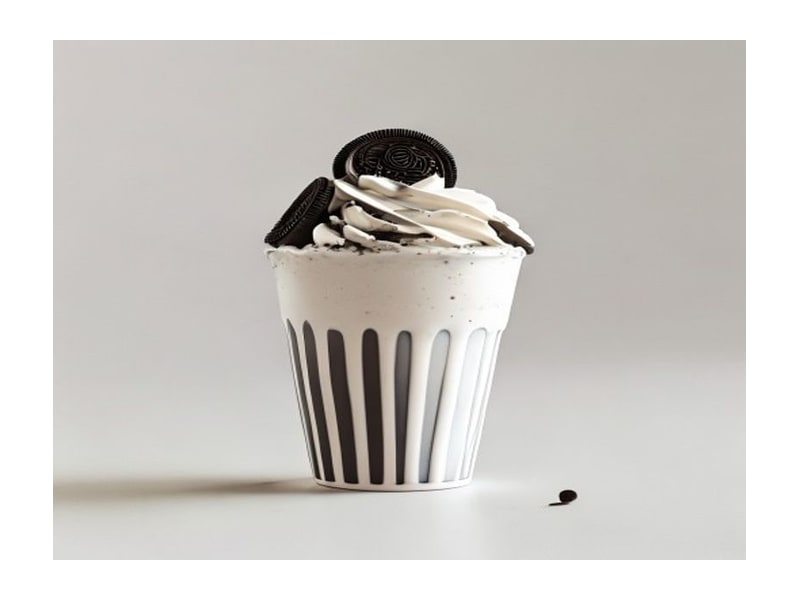

Fast food
McFlurry Oreo
McFlurry Oreo: 4 g białka, 195 kcal, 28 g węglowodanów i 8 g tłuszczu na 100 g. Kategoria: Fast food.
Kalorie195 kcalna 100 g
Białko / proteiny4 g
Węglowodany28 g
Tłuszcz8 g
Cena (szac.)~3,75 złza 100 g
Ceny zaktualizowano: maj 2026 (szacunek — ceny w popularnych supermarketach)
Porcja: kubek (200g)
| Kalorie | 390 kcal |
|---|---|
| Białko | 8 g |
| Węglowodany | 56 g |
| Tłuszcz | 16 g |
| Cena (szac.) | ~7,49 zł |
Szczegółowe składniki odżywcze na 100 g
| Wartość energetyczna (kalorie) | 195 kcal |
|---|---|
| Białko (proteiny) | 4 g |
| Węglowodany | 28 g |
| Tłuszcz | 8 g |
| Tłuszcze nasycone | 5 g |
| Tłuszcze nienasycone | 3 g |
| Witaminy i minerały | Wapń, Sód, Żelazo |
| Współczynnik kcal / 1 g białka | 48.8 |
| Cena produktu (szac. za 100 g) | ~3,75 zł |
| Cena za 100 g białka (szac.) | ~93,63 zł |